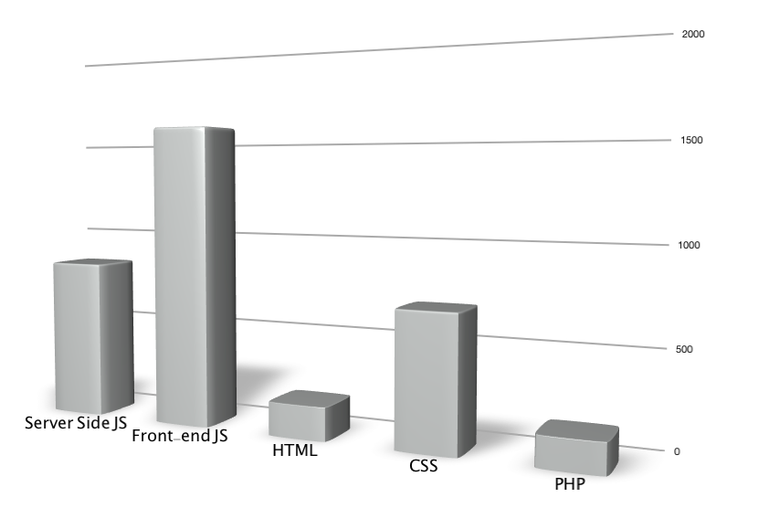

Drupal Poetry
Responsive Application Development with Drupal and Backbone
Elliott Foster
Michal Minecki
mm
Drupal Poetry
One codebase to rule them all.Desktop

Tablet

Mobile


Drupal Admin

ef
Technologies
mm
Front-end JS:
Backbone.js and Underscore
- Backbone
- Lightweight framework for creating web applications
- Almost a MVC
- Underscore
- Set of utility functions that make working with JavaScript less insane.
Backbone.js and Underscore
- Backbone
- Lightweight framework for creating web applications
- Almost a MVC
- Underscore
- Set of utility functions that make working with JavaScript less insane.
ef
Node.js
- nodejs.org
- Server side JavaScript platform.
- Built on Google Chrome's V8 JavaScript engine.
- Event-driven, non-blocking.
ef
MongoDB
- mongodb.org
- NoSQL database/document store.
- Objects stored in BSON (very similar to JSON).
- Schemaless design.
mm
Drupal
- drupal.org
- Fully baked administration workflow
- Easy to connect to using services module
- Lots of stuff "out of the box"
- Todd said we had to
ef+mm
Architecture

Responsive Application Development
vs
Responsive Web Development
mm
Responsive Web
- Send one piece of HTML for all devices.
- Smart client "fits" content to the screen.
- Don't hide content, rearrange.
- Very well established patterns for content heavy sites.
Examples


ef
Responsive Applications
- It's new ground, lots more unsolved problems that keep changing.
- Design patterns are not as strongly established for cross device interaction.
- HTML5 is a moving target, lots of promise but can't depend on browser support (test early and often).
- Lack of solid libraries, get ready to write lots of code and solve lots of problems.
- Inconsistent performance on older devices (Samsung Y U NO WORK!?).
Responsive application design requires different interfaces for different screen sizes.
- Content is simpler to scale than interaction.
- Consider which interactions need to be exposed on mobile and add more on larger display sizes.
- Still would recommend staying away from server side device detection.
- Sometimes interaction needs to be degraded and that takes planning.
mm
Design, code, and test mobile first.
Best piece of advice from this whole talk!
- Much easier to build up than to "fit" later.
- It's true for everything from design to code to testing.
- If you are going down this road it's time to stop being scared.
mm
Responsive App Interface Layout is Complicated
- Where does the Nexus 7 fit?
- Difference between tablet orientation is challenging
- You forgot about the twitter browser didn't you.
Responsive App Interface Layout is Complicated
- Modularity is king.
- Allow user to scale and scroll as much as you can.
- Expect the unexpected!
Client Side Templating To the Rescue
- It simplified everything and made the app fast (mostly).
- Made different interfaces possible since the data was separated (but didn't make them easy or seamless).
- Drawback: somewhat slow on shitty tablets.
- If we did it again we'd send rendered HTML for the initial view and then use templating for updates.
ef
CSS Display Dictates JavaScript Behavior
- Don't need to worry about differences in browser JavaScript APIs.
- It's fast!
(function($) {
// ...
var barVisible = $('#word-bar').is(':visible');
var listingsVisible = $('#listings').is(':visible');
// ...
}(jQuery));
ef
Duck Punch, Learn to Love It
- Proxy touch events to mouse events: jQuery-ui touch punch
- touch == click
- resize == orientation change
(function($) {
// ...
var supportsOrientationChange = "onorientationchange" in window;
var orientationEvent = supportsOrientationChange ? "orientationchange" : "resize";
// Reset barVisible on orientation changes.
var dispatch = _.clone(Backbone.Events);
window.addEventListener(
orientationEvent,
function() {
barVisible = $('#word-bar').is(':visible');
listingsVisible = $('#listings').is(':visible');
dispatch.trigger('orientationChange');
},
false
);
// ...
}(jQuery));
Drupal as Content Management not Content Server
ef
Why not build on Drupal?
- Drupal is too slow for highly interactive apps.
- We wanted to auto save on poem changes.
- We didn't want to deploy to a bunch of servers.
- WSCCI is going to make this much better!
 vs
vs

- We weren't supporting site builders.
- Don't need all the things that Drupal gives you for "free".
- Twitter is a great way to get simple user auth.
mm
Why build with Drupal?
- Who likes building admin interfaces!? Yeah us neither...
- Once you have nodes it's easy to set up aggregate views.
- Services is very easy to extend and work with.
- Administer poem words with Taxonomy <- Win!
ef
Why build with Node.js?
- Data models are JSON objects...
- They work on the client.
- They work on the server.
- They work in MongoDB.
- It's f%@#ing Fast!
- Evented I/O is great for bursty and unpredictable applications.
- All made possible with asynchronous libraries.
Autosave Workflow
ef
Actual
mm